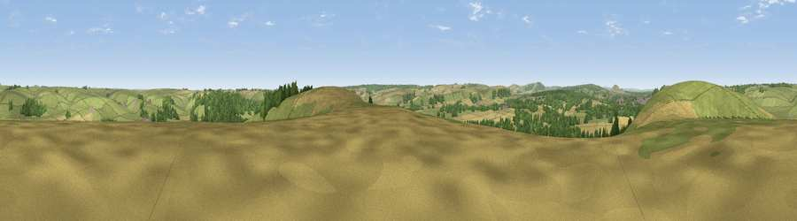

Viewpoint near Norton Bavant
#23657 in England · top 39% of its area beats it · near Norton BavantThe view, rendered

A 360° render of this exact spot computed from the terrain model, tree cover and land cover — summer colours, afternoon light, calibrated against photographs of famous viewpoints. Real trees, hedges and buildings will differ in detail.
The panorama
Grey silhouette: terrain skyline in each direction (720 bearings, Earth curvature and refraction included). Dashed green: skyline with trees (+15 m) and buildings (+8 m) as obstacles. Blue strip: how far the ground is visible on each bearing.
Where the view opens
Wedge length = distance to the farthest visible ground on that bearing (vegetation-aware). Rings at 10, 25 and 50 km.
What fills the view
56% grassland · 25% cropland · 17% woodland · 1% built-up
Angular shares of the visible panorama (visual magnitude), not map area. Landscape diversity 0.45 (0–1 Shannon).
Key numbers
More beautiful places nearby
The staircase of upgrades: each row has a higher view potential than everything closer. Driving times are estimates from straight-line distance, calibrated against real road routing — check an actual route before setting out.
| Place | Direction | Drive | Score |
|---|---|---|---|
| Viewpoint near Heytesbury | SSE · 1 km | ~2 min | 55.3 |
| Viewpoint near Norton Bavant | NW · 1 km | ~2 min | 58.0 |
| Arn Hill Down | NW · 5 km | ~11 min | 61.9 |
| Viewpoint near Upton Scudamore | NW · 7 km | ~14 min | 65.8 |
| Viewpoint near Upton Scudamore | NW · 7 km | ~14 min | 67.0 |
| Viewpoint near Westbury | NNW · 8 km | ~15 min | 71.3 |
| Cley Hill | W · 8 km | ~16 min | 76.8 |
| Viewpoint near Berwick St John | S · 23 km | ~38 min | 78.2 |
51.19313, -2.12051 · source: screening · position refined by local search. Computed location — check access rights before visiting.